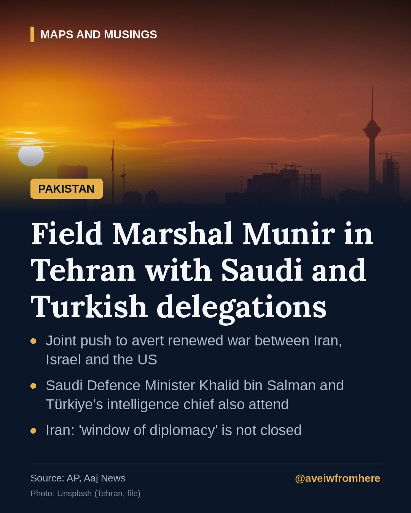

Pakistan, Saudi Arabia and Türkiye send top officials to Tehran to head off a new war
Field Marshal Asim Munir, Saudi Defence Minister Khalid bin Salman and Türkiye's intelligence chief are in Tehran, pressing for a deal between Iran and the United States.

On Monday, 26 October, high-level delegations from three of Iran's most important neighbours arrived in Tehran with one goal: to stop the region sliding back into full-scale war.
Who went
According to the Associated Press, citing two regional officials, the visitors included:
- Field Marshal Asim Munir, Pakistan's army chief
- Prince Khalid bin Salman, Saudi Arabia's defence minister
- The head of Türkiye's intelligence service
They were due to meet Iran's top security officials and negotiators to push for a deal between Tehran and Washington. Houthi strikes on Saudi Arabia from Yemen were also on the agenda. Saudi Arabia said the delegations hoped to find "ways to de-escalate tensions, enhance regional security and promote its stability". An Iranian official confirmed their arrival.
Iran's message
Iran's foreign ministry spokesman, Esmail Baghaei, said Tehran had not closed the window of diplomacy and that messages were being passed to the United States through intermediaries. But he said negotiations had long been stalled and that the US appeared to be pressing unilateral demands, adding that no Iranian would accept the American phrase "complete surrender".
A tense week
The visit comes at a delicate moment:
- Israel votes on Tuesday, 27 October. Prime Minister Benjamin Netanyahu has warned that Iran or its proxies could try to disrupt the election, saying the army "is ready both to defend and to strike".
- The US holds midterm elections on 3 November. President Donald Trump has said new strikes would wait until after the vote.
- Oil prices rose to their highest level since March last week, as attacks on shipping around the Strait of Hormuz reached a record.
Pakistan's role
Pakistan has acted as a channel between Washington and Tehran since the war began in February. Last Friday in Istanbul, Pakistan, Türkiye, Saudi Arabia and Egypt publicly backed the "Islamabad MoU", the Pakistan-brokered understanding intended to keep the pause in hostilities from collapsing. The Tehran trip, with Saudi and Turkish partners at Pakistan's side, extends that effort from statements to direct, face-to-face pressure.
What to watch
The outcome of Israel's election, any American decision on strikes after the midterms, and whether Iran engages with the mediators' proposals will decide whether this round of diplomacy holds, or whether the region faces another escalation.